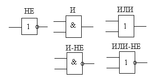
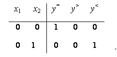

электронный
ресурс по учебной дисциплине 1-58 01 01 - "ИНЖЕНЕРНО-ПСИХОЛОГИЧЕСКОЕ ОБЕСПЕЧЕНИЕ ИНФОРМАЦИОННЫХ ТЕХНОЛОГИЙ"
|
||
| Оглавление | Программа | Теория | Практика | Контроль знаний | Об авторах | ||
|
Практика
ЛАБОРАТОРНАЯ РАБОТА №4 Исследование процессов проектирования и анализа комбинационных схем Цель работы: Разработать комбинационную схему и провести ее анализ. Написать программу реализующую комбинационную схему. Теоретические сведения Обработка входной информации X в выходную Y в любых схемах ЭВМ обеспечивается преобразователями или цифровыми автоматами двух видов: комбинационными схемами и схемами с памятью. Комбинационные схемы (КС) – это схемы, у которых выходные сигналы Y = (y1, у2, ..., уm) в любой момент дискретного времени однозначно определяются совокупностью входных сигналов Х = (х1, х2, ..., хn), поступающих в тот же момент времени t. Реализуемый в КС способ обработки информации называется комбинационным потому, что результат обработки зависит только от комбинации входных сигналов и формируется сразу же при поступлении входных сигналов. Поэтому одним из достоинств комбинационных схем является их высокое быстродействие. Преобразование информации однозначно описывается логическими функциями вида Y = ƒ(X). Логическая функция – это функция, которая устанавливает соответствие между одним или несколькими высказываниями, которые называются аргументами функции, и высказыванием, которое называется значением функции. Логические функции и соответствующие им комбинационные схемы подразделяют на регулярные и нерегулярные структуры. Регулярные структуры предполагают построение схемы таким образом, что каждый из ее выходов строится по аналогии с предыдущими. В нерегулярных структурах такая аналогия отсутствует. В практике проектирования ЭВМ накоплен огромный опыт по синтезу различных схем. Многие регулярные структуры положены в основу построения отдельных ИС малой и средней степени интеграции или отдельных функциональных частей БИС и СБИС. Из регулярных комбинационных схем наиболее распространены дешифраторы, шифраторы, схемы сравнения, комбинационные сумматоры, коммутаторы и др. Логические выражения или переключательные функции легко реализуются на простейших дискретных логических элементах, которыми являются инверторы, схемы логического умножения, логического сложения, а также комбинированные элементы (рис. 1).  Рисунок 1 – Дискретные логические элементы Компаратором называется устройство сравнения кодов нескольких чисел. В общем случае компаратор параллельных кодов двух m-разрядных двоичных чисел представляет собой комбинационную схему с 2m входами и тремя выходами («равно», «больше», «меньше»). При поступлении на входы кодов двух сравниваемых чисел сигнал логической единицы, в зависимости от результатов сравнения, появляется только на одном из выходов. В некоторых случаях компаратор может иметь менее трех выходов. Одноразрядный компаратор имеет два входа на которые одновременно поступают одноразрядные двоичные числа x1 и x2, и три выхода (=, >, <). Составление таблицы истинности заключается в записи всех возможных состояний входных сигналов и соответствующих им состояний выходов. Из таблицы истинности (рис. 2) получаются логические уравнения компаратора при сравнении x1 с x2 (рис. 3).  y<
0
0
1
1 0
1
0
1 1
0
0
1 0
0
1
0 0
1
0
0
" v:shapes="Выноска_x0020_1_x0020__x0028_без_x0020_границы_x0029__x0020_5"> Рисунок 2 – Таблицы истинности одноразрядного компаратора
Рисунок 3 – Логические уравнения для одноразрядного компаратора Реализация такого компаратора в базисе И–НЕ приводит к следующей схеме (рис. 4). Многоразрядные компараторы обычно выполняют на базе одноразрядных. При этом используется принцип последовательного сравнения разрядов многоразрядных чисел, начиная с их старших разрядов, так как уже на этом этапе, если x1m ¹ x2m, задача может быть решена однозначно, и сравнение следующих за старшими разрядов не потребуется. Задание для выполнения лабораторной работы Разработать комбинационную схему. Варианты заданий:
Порядок выполнения работы 1. Напишите программу, обеспечивающую решение задачи. 2. Постройте зависимости выходных параметров от входных. 3. Оформите отчет и защитите лабораторную работу. Содержание отчета 1. Цель работы. 2. Краткие теоретические сведения. 3. Решение задачи. 4. Код программы и скриншоты рабочих окон. 5. Зависимости выходных параметров от выходных. 6. Выводы по работе. Контрольные вопросы 1. Как записывается таблица истинности? 2. Что такое комбинационные схемы? 3. Что такое логическая функция? 4. На что подразделяются логические функции и соответствующие им комбинационные схемы? 5. Какие логические операции вы знаете? 6. Нарисуйте простейшие дискретные логические элементы. 7. Назовите наиболее распространенные регулярные комбинационные схемы. 8. >Что такое компаратор? 9. Принцип построения и работы одноразрядного компаратора. 10. Принцип построения и работы многоразрядного компаратора. Практика
|
| (С) БГУИР |